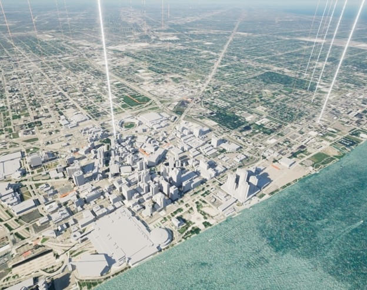
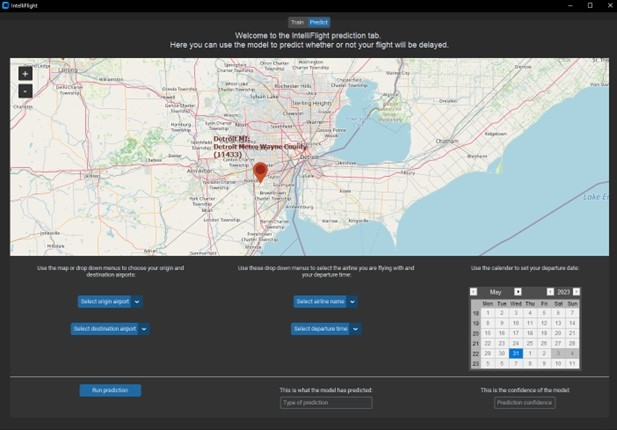

Education

University of Michigan-Dearborn, 2018 - 2023
Bachelor of Computer Science
Concentration in Computer Information and Science
Relevant Courses: Data Structures and Algorithm Analysis, Database Management Systems, Software Engineering 1 and 2, Software Engineering Tools, Intro to C#, Intro to AI, Operating Systems
Projects
Detroit Digital Twin
Spent two semesters working with a small team to develop a Digital Twin of Detroit using Microsoft Azure, Unreal Engine 5, and ArcGIS for real-time data visualization with 3D models while following the full software development life cycle.
IntelliFlight
Worked on a small team to design and implement a graphical user interface for a Naïve Bayesian network that can predicate whether a flight would be delayed.